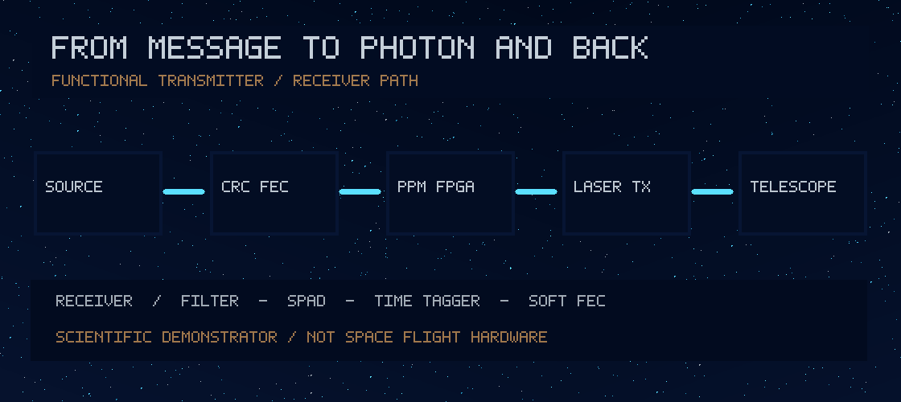

A · Engineering
Get the information through.
In the photon-starved limit, every photon matters. We model PPM, background counts, pointing noise, error correction and verified image packets.
Run the optical modelInterstellar communication · Optical instrumentation · Experimental physics
A research programme to design photon-efficient deep-space transmitters and receivers—and to rigorously test the harder possibility of controllable information arriving outside the ordinary light cone.
01 / The problem
Between Earth and a receiver near Proxima Centauri, photons take years. Better lasers, telescopes, detectors and codes can carry more reliable information, but they cannot advance the first newly chosen bit under known physics.
A · Engineering
In the photon-starved limit, every photon matters. We model PPM, background counts, pointing noise, error correction and verified image packets.
Run the optical modelB · Causal tests
Quantum entanglement changes joint correlations, not the remote receiver's local marginal. A fresh random message and strict timing are essential.
Read the null experimentC · Speculative physics
Every proposed metric must satisfy Einstein's equations with a credible source, and the relevant causal paths must be calculated using the actual metric.
Read the falsification criteria02 / Instrument and communications architecture
We begin with an architecture that could ultimately be realised in hardware. The laser, detector and optical terminal shown here are subsystem concepts, not flight-qualified components.

Transmitter terminal
A reference implementation needs laser-current control, pulse-energy verification, an independent shutdown interlock, optical point-ahead and closed-loop beam steering.
Functional design; hardware qualification outstanding
Receiver terminal
Single-photon detector biasing, quench circuitry and cryogenic systems are specialized. The programme models the receiver before selecting validated vendor modules.
Photon-counting simulations; no bench-validated detector yet
03 / Live computational laboratory
Change the optical power, pupil sizes and distance. The calculation is deterministic and runs in your browser. All parameters are illustrative; no measurements are streamed from real hardware.
Pointing retention: — · Ideal coupling: — · Expected time for 1,000 photons: —
Assumptions: far-field Airy small-receiver approximation with an *approximate Gaussian-equivalent* pointing-loss factor, constant efficiency, perfect acquisition, no atmospheric loss, no stellar spectral background and no detector saturation. The live calculation is not a mission link budget.
Synthetic decoder test
Put a pulse in one of M slots. Signal and background photons follow independent Poisson distributions. The receiver picks the strongest slot, breaking ties randomly.
Uncoded hard-decision receiver, 800 deterministic synthetic trials per setting. No LDPC or deep-space synchronization modeled here; the repository contains more detailed Python FEC experiments.
04 / Electronics and closed-loop control
Start with a 3.3 V visible-LED optical loopback. Measure GPIO jitter and receiver edges, then progress to time tagging and qualified photon-counting modules.
At an assumed LED forward drop of 2.0 V, the nominal current is about 3.9 mA. Confirm datasheets, GPIO drive limits, detector polarity, rise time and wiring. This is an educational low-voltage schematic, not a qualified spacecraft PCB.
Open wiring and measurement protocolControl bandwidth, actuator limits, vibration and star-tracker reference errors affect received photon count. The receiver's absence of photons is not by itself proof of a causal or modulation failure.
Read hardware validation gates05 / The harder frontier
An apparent early arrival is not enough. The message has to be freshly randomized and recoverable at a spacetime event outside the actual physical future causal set of the send event.
Quantum no-signalling
Bell pairs make correlated outcomes possible. Bob's unconditioned local distribution remains 50/50 regardless of Alice's unread measurement choice. Quantum teleportation still uses an ordinary classical channel.
Explore the Bell-pair controlRelativistic chronology
Moving endpoints change the intercept time and point-ahead direction. Our Python solver is an inertial-frame baseline. Speculative geometries must be analyzed under their own metric—not judged against a conveniently chosen background path.
Read the field equationsSpeculative corridor research
Warp drives and Krasnikov-type corridors require stress-energy sources, energy-condition assessments and global causality checks. The project contains no working superluminal transmitter.
Research gates and possible failures06 / Research record
Scientific longevity means retaining models, input constants, sensor interfaces, uncertainty budgets, falsification criteria and the source of every visual. A striking diagram without a reproducible calculation is not an instrument blueprint.
| Milestone | Already represented | Still required |
|---|---|---|
| Photon Frontier | Photon budget, uncoded and soft PPM models, CRC-tiled predictive images | Measured receiver time tags; sourced flight-grade FEC; acquisition and synchronization |
| Instrument | Conceptual electronic transmitter / detector block chains and LED loopback | Parts list, ECAD design, EMC, optical safety, controlled bench measurements |
| Moving targets | Constant-velocity null-intercept and point-ahead calculations | Frozen astrometry with covariance, accelerating worldlines, clock transfer |
| Causal Frontier | Bell-pair null and deliberately leaked positive controls | Independent physical timing experiment and preregistered analysis |
| Spacetime corridor | Hypotheses and source/causality validation requirements | Full Einstein-tensor solver, matter model, global consistency and independent replication |
07 / Primary material